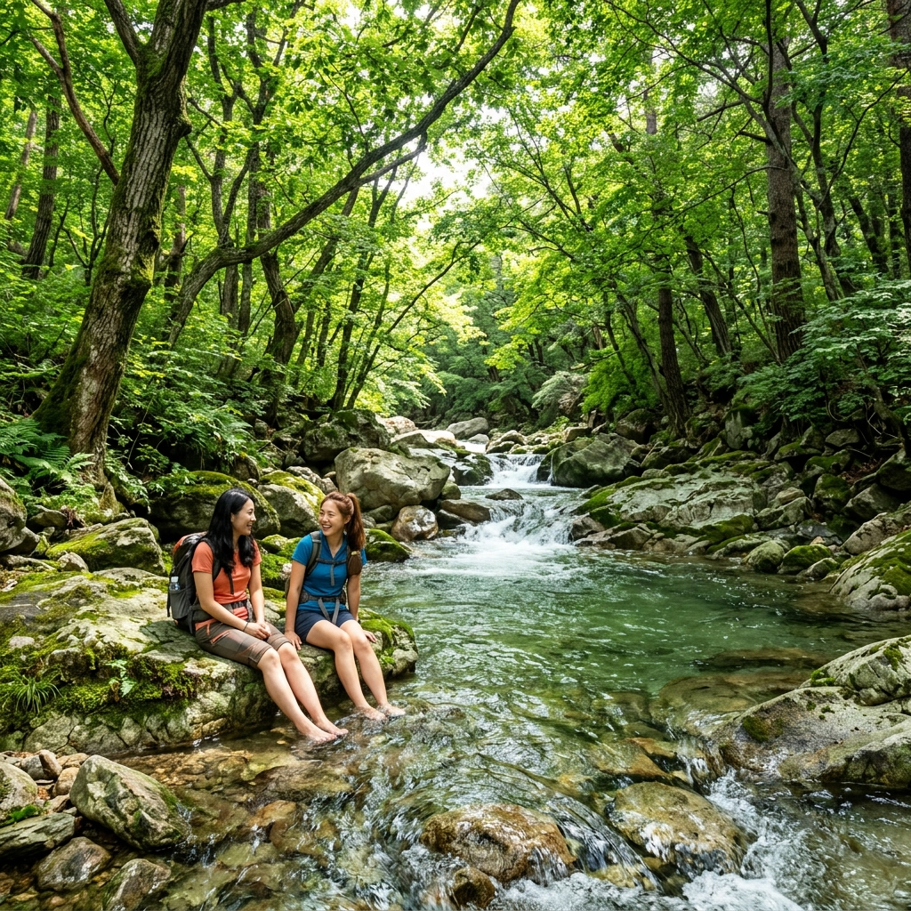
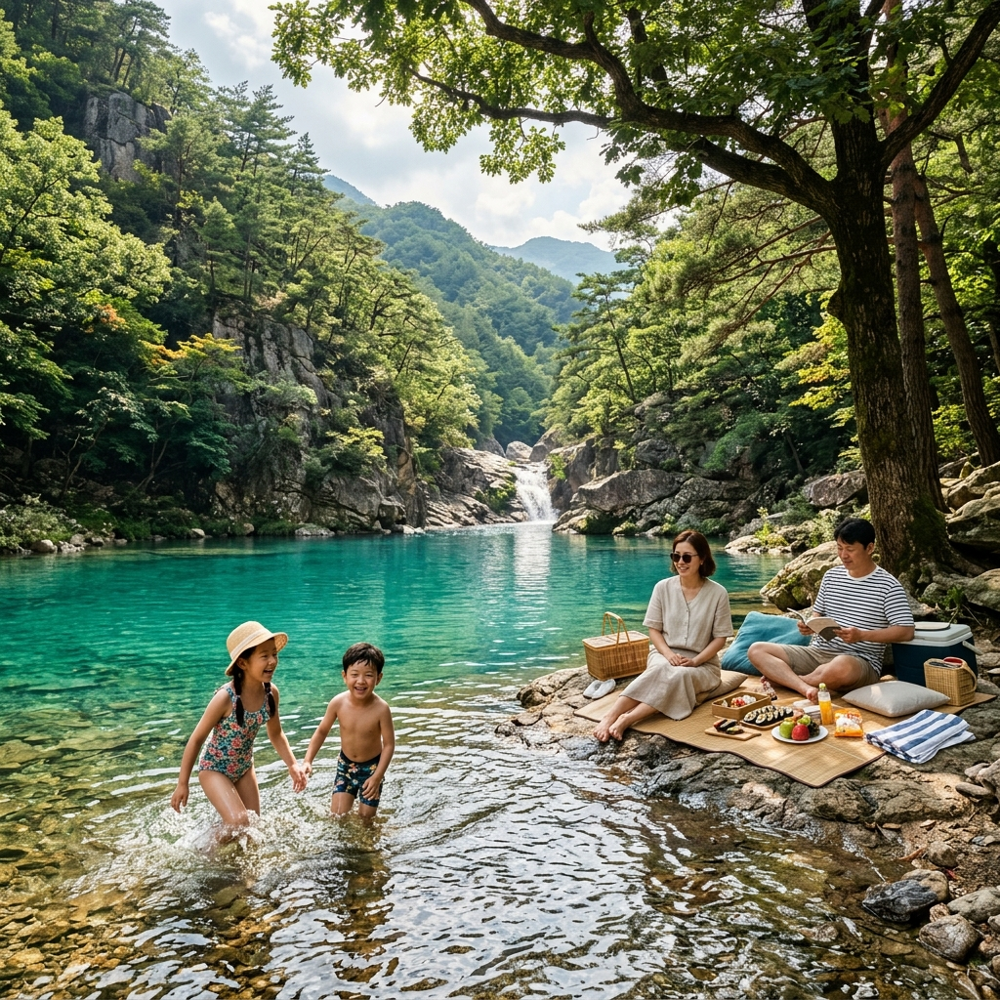
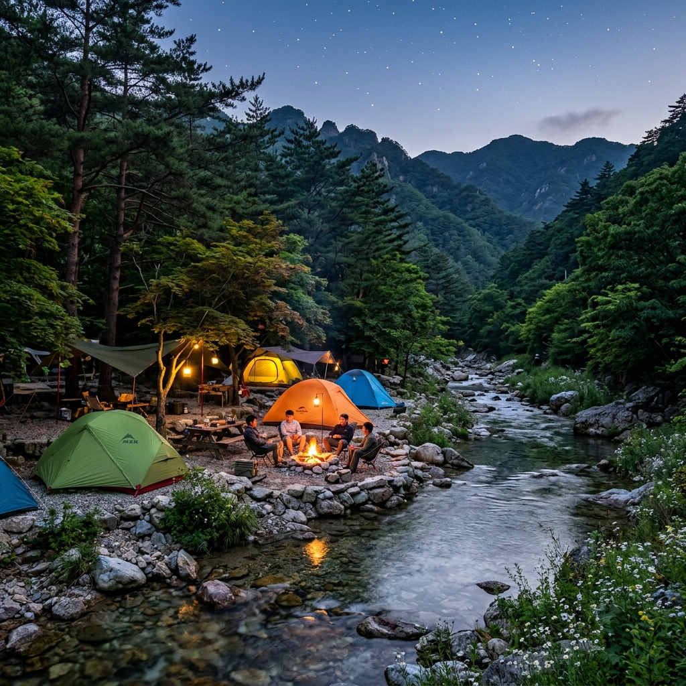

충북 영동 물한계곡 피서 — 민주지산 원시 계곡 당일치기 코스와 캠핑장 안내
물한계곡이라는 이름을 처음 들었을 때 솔직히 반신반의했습니다. 충북 영동에 수도권 계곡들과 비교될 만한 곳이 있을까 싶었습니다. 그런데 직접 가보고 나서 인식이 완전히 바뀌었습니다. 계곡 물이 어찌나 맑은지 바닥의 자갈 무늬가 수면 위에서 그대로 보였고, 한 20분쯤 걸어 올라가자 인적이 뚝 끊기면서 원시림 속 계곡만 남았습니다.
영동은 수도권에서 2시간 30분~3시간 거리지만, 덕분에 가평·포천에 비해 훨씬 한적하게 여름을 즐길 수 있습니다. 이 글에서는 물한계곡 당일치기 코스부터 캠핑 정보, 솔직한 단점까지 정리했습니다.

물한계곡 원시림 속 에메랄드 계류 / AI 제작 이미지
01 | 물한계곡 기본 정보
충청북도 영동군 상촌면 물한리에 위치하며, 민주지산(1,242m) 서쪽 사면을 따라 약 10km의 계곡이 이어집니다. 상류로 갈수록 원시림이 짙어지고 물이 더 차갑고 맑아집니다.
한여름에도 계곡 수온이 15℃ 내외를 유지합니다. 그늘진 원시림 속을 흐르는 물이라 낮 기온이 35℃를 넘어도 계곡에 발을 담그면 금세 차가워집니다. 피톤치드 농도도 높아 계곡을 따라 걷는 것만으로도 몸이 상쾌해지는 느낌을 받을 수 있습니다.
수도권 유명 계곡들과 비교했을 때 가장 큰 차이는 상업화 정도입니다. 물한계곡은 아직 대형 상업 시설이 많지 않아 자연 상태가 잘 살아 있습니다. 반면 편의성(식당·편의점·화장실 수)은 부족한 편입니다.
02 | 교통과 주차 — 서울에서 가는 법
경부고속도로 또는 통영대전중부고속도로를 이용해 영동IC에서 내립니다. 내비게이션에 '물한계곡 주차장' 또는 '영동군 상촌면 물한리'를 입력하면 됩니다. 영동IC에서 약 20~25분 소요됩니다.
서울 기준 약 2시간 30분~3시간, 대전 기준 약 1시간 거리입니다. 주차장은 계곡 입구에 무료로 운영되며 약 50~70대 수용 가능합니다. 성수기 주말에는 오전 9시 이전 도착해야 자리 확보가 가능합니다. 차량이 많으면 진입로 갓길에 주차하고 도보로 이동해야 합니다.
대중교통은 영동터미널에서 군내버스를 이용할 수 있으나 하루 몇 차례 운행에 그쳐 사실상 자가용이 필수입니다.
✍️ 직접 가보니
주차장에서 이무기소까지는 10분 정도 평탄한 계곡 옆 오솔길을 걷습니다. 여기까지는 사람이 많습니다. 그런데 이무기소를 지나 20분 더 올라가면 사람이 확 줄어듭니다. 40분 정도 걸어 올라간 중상류 구간에서 개인 소(沼)를 거의 독차지할 수 있었습니다. 하류 명소만 보고 '사람 많네' 하고 돌아가는 분들이 많은데, 20분만 더 올라가면 전혀 다른 계곡이 나타납니다. 발을 10분 이상 담그면 진짜로 발이 시리니 아이들 물놀이는 20~30분 단위로 끊어주세요.
03 | 당일치기 추천 코스
오전 출발 당일치기 코스 (왕복 약 3~4시간 현장 체류 기준)
서울 오전 7시 출발 → 영동IC 도착 후 10시경 물한계곡 주차장 도착 → 탐방안내소 → 이무기소(물놀이 30분) → 상류 방향 30분 더 걸어 올라가 한적한 소 발견 → 점심식사(준비해온 도시락 추천) → 오후 2시 귀경 출발 → 서울 오후 5~6시 도착.
계곡 트레킹과 물놀이 두 가지를 모두 즐기려면 이 코스가 효율적입니다. 민주지산 정상 등산을 추가하면 왕복 5~6시간이 추가되므로 당일치기로는 계곡 트레킹 정도가 현실적입니다.
준비물: 아쿠아 슈즈(필수), 래쉬가드, 수건, 갈아입을 옷, 도시락·물, 자외선 차단제, 작은 배낭.

물한계곡 여름 가족 피서 물놀이 / AI 제작 이미지
04 | 주요 물놀이 포인트 2곳
이무기소 (하류, 탐방안내소 근처): 계곡에서 가장 크고 수심이 다양한 소입니다. 주변에 넓은 바위가 많아 돗자리를 깔고 쉬기 좋습니다. 성수기에 가장 붐비는 구간이기도 합니다. 수심 주의 표지판을 반드시 확인하세요.
상류 숨은 소 (이무기소에서 20~30분 거리): 계곡 탐방로를 따라 더 올라가면 작고 아늑한 소가 여럿 나타납니다. 크기는 작지만 수온이 더 차갑고 사람이 훨씬 적습니다. 혼자 즐기는 프라이빗 계곡 느낌을 원한다면 이 구간이 훨씬 낫습니다.
계곡 물놀이 안전: 구명조끼 착용(특히 아이들), 음주 입수 절대 금지, 갑자기 물색이 탁해지거나 소리가 커지면 즉시 대피. 7월 장마 기간에는 상류 폭우 여부를 반드시 확인하고 방문하세요.
05 | 민주지산 정상 등산 — 체력 좋은 분께
물한계곡 입구에서 민주지산 정상까지 왕복 약 5~6시간이 소요됩니다. 경사가 중반부터 가팔라지므로 등산화와 스틱이 필수입니다. 정상부에서는 충청·경북·전북 세 방향의 파노라마가 펼쳐지고, 세 도가 만나는 삼도봉(1,176m) 표지석도 볼 수 있습니다.
등산과 계곡 물놀이를 함께 즐기려면 오전 6시 출발을 강력히 권합니다. 정상 등산 후 하산해서 계곡에서 발을 담그는 마무리는 하루 중 가장 행복한 순간이 됩니다. 체력이 충분하지 않다면 중간 지점(계곡 중류)까지만 트레킹하고 물놀이로 마무리하는 것이 현실적입니다.
06 | 캠핑장 정보 — 국민여가캠핑장과 자연휴양림
물한국민여가캠핑장: 한국자연휴양림관리원 운영. 계곡 바로 옆에 텐트·카라반 사이트가 마련되어 있습니다. 여름 성수기에는 숲나들e(foresttrip.go.kr)를 통한 사전 예약이 필수이며, 빠르게 마감됩니다.
물한계곡 자연휴양림: 인접한 자연휴양림. 숲속의 집(통나무 객실)도 운영해 텐트 없이 계곡 옆 숙박이 가능합니다. 아이 동반 가족에게 적합합니다.
두 시설 모두 성수기 2개월 전에는 예약이 시작됩니다. 원하는 날짜가 있다면 예약 오픈 직후 신청하는 것이 좋습니다.

물한계곡 인근 계곡 캠핑 야경 / AI 제작 이미지
07 | 주변 먹거리와 편의시설
계곡 바로 인근에는 식당이 많지 않습니다. 계곡 입구 주변에 소규모 민박 식당이 몇 곳 있으며, 민물고기 매운탕, 두부 요리 등을 판매합니다. 가격은 1인당 1만~1만5,000원 내외로 비교적 저렴합니다.
도시락을 챙겨오거나 영동읍 시내에서 미리 식사하고 오는 것을 추천합니다. 영동은 포도와 곶감으로 유명한 고장입니다. 7~8월 방문이라면 도로변 직판장에서 갓 딴 포도를 저렴하게 구입할 수 있습니다. 영동 추풍령 방면의 레일바이크와 와인동굴도 묶어서 방문하는 경우가 많습니다.
08 | 솔직한 장단점 — 가평·포천과 비교하면
물한계곡의 명확한 장점: 수도권 유명 계곡 대비 훨씬 한적함, 물이 맑고 차가움, 원시림 보존 상태 우수, 무료 주차.
현실적 단점:
• 편의점·대형 마트가 계곡 인근에 없음 (미리 챙겨와야 함)
• 식당이 매우 적음 (도시락 필수)
• 서울에서 2시간 30분~3시간으로 다소 멀어 피로 감수 필요
• 대중교통 불편
이런 분께는 추천: 사람 적고 물 맑은 계곡을 찾는 분, 자연 그대로의 트레킹을 즐기는 분, 캠핑과 계곡을 함께 즐기고 싶은 분.
이런 분께는 비추천: 편의 시설이 꼭 필요한 분, 대중교통만 이용 가능한 분, 식당과 편의점이 계곡 입구에 있기를 원하는 분.
09 | 장마철 방문 안전 유의사항
7월은 장마가 겹치는 시기입니다. 물한계곡 방문 전 반드시 일기예보를 확인하세요. 상류 폭우가 내리면 하류도 갑자기 물이 불어 물놀이가 위험해집니다.
안전 대피 기준: ① 계곡 물색이 갑자기 탁해질 때 ② 물소리가 갑자기 커질 때 ③ 상류에서 천둥 소리 들릴 때 → 즉시 계곡에서 나와 높은 곳으로 이동하세요.
우천 예보가 있는 날에는 계곡 물놀이보다 민주지산 트레킹이나 탐방로 산책 위주로 일정을 바꾸는 것이 좋습니다. 비 오는 날의 원시림 계곡도 운치가 있어 계곡 소리를 들으며 걷는 것만으로도 충분히 즐길 수 있습니다.
📝 작성자 메모
충청·경북·강원 계곡 피서지를 꾸준히 탐방하며 소개하고 있습니다. 물한계곡 캠핑장 예약 가능 여부와 도로 상태는 시즌마다 달라질 수 있습니다. 정보 기준일: 2026-06-29. 방문 전 숲나들e(foresttrip.go.kr) 캠핑장 예약 현황과 기상청 날씨를 반드시 재확인하세요.
#물한계곡피서
#영동계곡당일치기
#충북계곡
#민주지산트레킹
#여름계곡피서
#물한국민여가캠핑장
#충북숨은명소
#7월피서
#한적한계곡
#원시림계곡트레킹